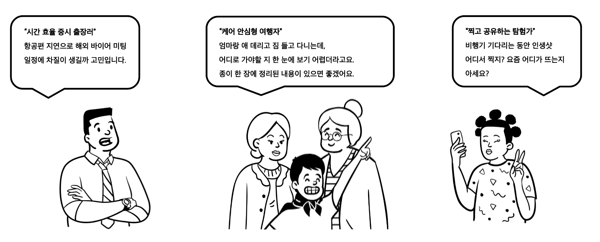

프로젝트 목표
공항 이용객들이 출국 전에 마주하는 다양한 문제들(길 찾기, 주차, 빠른 출국장 등)을 다양한 환경에서 다양한 서비스로 해결할 수 있는 올인원 서비스를 제공함으로써 문제를 해결하는 것을 목표로 함
프로젝트 배경
- 인천공항은 세계적인 허브 공항이지만 여전히 주차, 혼잡도, 안내 서비스 등에서 불편이 잦음
- 여행자 유형에 따라 필요로 하는 정보와 서비스가 다양함 → 맞춤형 지원 필요
- AI·클라우드·실시간 데이터 기술을 결합해 기존 안내/서비스의 한계를 보완하고자 함
- 공항 이용객들의 실질적인 경험 개선을 통해 더 나은 공항 서비스 모델 제안
프로젝트 필요성
한국항공협회에 따르면 인천공항 이용객들이 활성화가 필요하다고 느끼는 요소 중 40%가 교통, 대기시간, 편의시설 개선이었습니다.
출처: 한국항공협회
실제 저희가 진행한 사용자 설문조사에서도 같은 결과를 확인할 수 있었습니다.

Google Forms를 통한 설문 결과
- 성별, 연령, 성격유형
- 공항 이용 목적, 빈도, 동행자, 목적지, 계절
- 탑승 몇 시간 전 도착, 주로 하는 일(쇼핑, 식사, 카페 등)
- 주차장, 안내센터 이용 빈도, 텍스트 vs 시각자료 선호도

팀원 구성 및 역할
- 김시온 : 데이터 수집, 파이프라인, Power BI, Azure ML, 챗봇 서비스(RAG)
- 김동현 : 데이터 수집, 길찾기 서비스 구현, 지연 항공편 서비스 구현
- 박명균 : 데이터 수집, Power BI, ML, UI/UX
- 심형은 : 데이터 수집, ML, 서비스 기획, 사용자 분석
- 오민석 : 데이터 수집, 챗봇 서비스 구현, 테스트 및 디버깅, UI/UX
- 정민철 : 데이터 수집, Power BI, ML
전체 파이프라인

데이터 수집

공공데이터포털을 통해 총 5가지 데이터를 API를 통해 수집: 인천공항의 실시간 주차장 현황, 상업시설 안내, 항공편 및 기상 정보, 출국장 혼잡도 데이터.
한국수출입은행 환율 정보도 API로 수집.
데이터 특성과 변동 주기를 고려하여 수집 주기를 다르게 설정했고, Azure Functions Timer Trigger로 자동 수집과 주기적 실행을 효율적으로 관리.
Google Forms를 통해 약 300건의 이용객 불편사항 데이터도 수집.
데이터 전처리

Azure Functions → Event hub → Stream Analytics를 통해 실시간 전처리 (결측치, 이상치 처리, 파생 컬럼 생성, 정규화 등) 후 Cosmos DB 저장

Cosmos DB change feed 감지 → Azure Function 트리거 → 벡터 변환 후 diskANN 인덱싱 → Cosmos DB 업데이트
데이터 분석
1. 설문 데이터 분석


Azure ML에서 k-means 군집화 → 3가지 사용자 유형으로 분류하여 페르소나 도출
- 시간 효율 중시 출장러 → 지연 항공 알림, 최적 경로 안내, 주차장 정보
- 케어 안심형 여행자 → 챗봇 서비스+음성 입력, 통합 대시보드
- 찍고 공유하는 탐험가 → 외국어 지원 챗봇, 포토존/맛집 안내
2. 인천공항 데이터 기반 검증
실시간 주차장 및 항공편 데이터를 분석해 문제 체감 사항을 데이터로 검증
서비스
서비스1. AI 챗봇


GPT-4.1-mini 모델 기반 챗봇 서비스 구현, 다국어·음성입력·반응형 UI 지원
서비스2. 데이터 리포트 (Power BI)


출국 전 통합정보·실시간 주차장·다국어 대시보드 제공
서비스3. 공항 길찾기
공항 내외부 길찾기 기능, Kakao Map/T-map API 활용
서비스4. 지연 항공 알림
실시간 항공편/기상 데이터 기반 Teams 실시간 알림 서비스
문제 상황 발생 및 해결


Power BI Direct Query 제약 → 테이블 병합 후 Cosmos DB 저장


Cosmos DB 선택 → 실시간성/확장성 확보
기대 효과
- 공항 이용객의 불편 요소를 실시간으로 파악하고 해결책을 제공
- 여행자 유형별 맞춤 서비스로 사용자 경험 향상
- 소규모 인력으로도 공항 서비스 품질 관리 가능
- AI와 클라우드 기반으로 확장 가능성이 높은 공항 서비스 모델 제시
- 국내외 공항 운영 개선에 참고할 수 있는 인사이트 제공